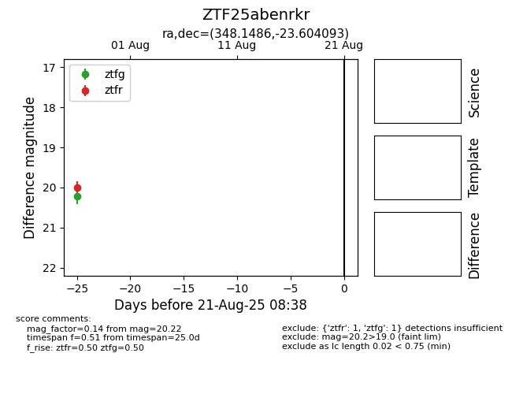

Target ZTF25abenrkr at 2025-08-21 11:20, see:
FINK: fink-portal.org/ZTF25abenrkr
Lasair: lasair-ztf.lsst.ac.uk/objects/ZTF25abenrkr
ALeRCE: alerce.online/object/ZTF25abenrkr
alt names
ZTF25abenrkr (ztf,alerce)
coordinates:
equatorial (ra, dec) = (348.1486,-23.60409)
galactic (l, b) = (36.3990,-67.43284)
photometry
last ztfg=20.22, ztfr=20.00
1 ztfg, 1 ztfr detections
